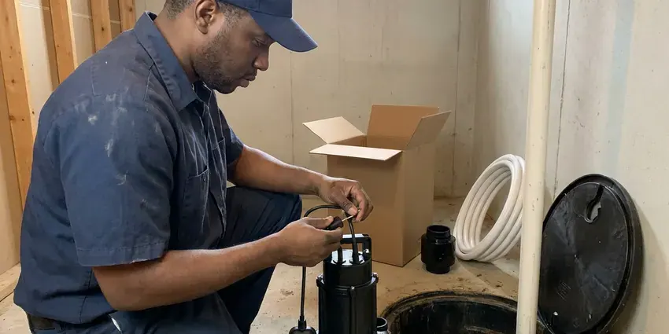
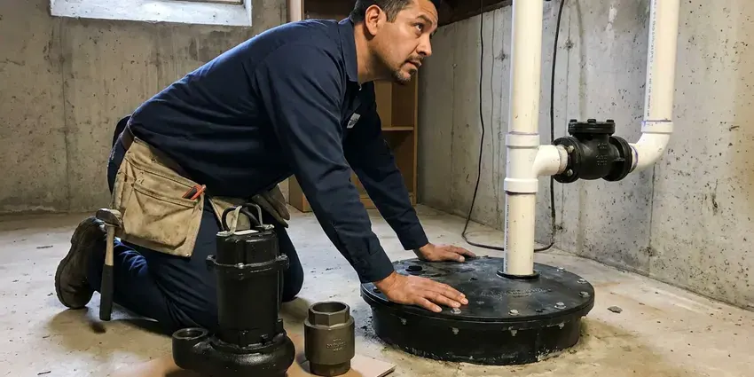

Gas Water Heater Installation in Euclid, OH
Gas water heater installation in Euclid, OH from HRL Plumbing, with a leak test and a draft test on every job.
- Same-Day Gas Heater Installs
- Prompt Local Service
- Clear Pricing
- Local Euclid Service

Need a New Gas Water Heater in Euclid, OH?
Contact HRL Plumbing for a gas water heater install that passes inspection.
Natural Gas and Propane Water Heater Installs in Euclid, OH
HRL Plumbing focuses on the parts of a gas install that keep people safe. Every job gets a drip leg, a shutoff and a leak check on all fittings before the burner is lit. Then we test the draft.
Our expertise includes:
- Secure gas line and vent work
- Right-size recommendations
- Natural gas and propane hookups

Additional Plumbing Installation Services in Euclid, OH
We install water heaters, pumps, lines, and fixtures across Euclid, OH with careful, permitted work that passes inspection the first time.


Professional sump pump installation, Euclid


Customers
Why Choose HRL Plumbing for Gas Water Heater Installation in Euclid, OH?
Gas water heaters need correct venting and gas supply to run safely. Poor installation can lead to backdrafting, carbon monoxide in the living space and burners that soot up and fail years early. We test every vent.
- Careful Gas Work, Bad gas or vent work can hurt people, so our licensed techs follow strict steps.
- Longer Life, A clean install reduces stress on the tank, which stretches its life.
- Code Compliant, We meet Ohio plumbing code on every gas install.
Citywide Coverage
Anywhere in Euclid, our plumbers get there quickly. Every part of town gets the same crews.
Experienced Team
Licensed plumbers on our team know most gas heaters on the market. Regular training keeps them current on gas safety.
Safety-First Approach
Throughout the install we check for leaks and confirm the exhaust setup. Your heater will run safely for years.
Trusted Certified Euclid Plumbing Services Professionals
At HRL Plumbing, we are proud to offer certified plumbing services throughout Euclid, OH. Those papers on the wall mean something. Our plumbers hold recognized industry credentials, and they follow strict safety and quality rules on every repair, installation and maintenance call we run.
Call Us Now PHCC Plumbing Contractor Recognition
PHCC Plumbing Contractor Recognition Better Business Bureau (BBB) Accreditation
Better Business Bureau (BBB) Accreditation Angi Certified Pro
Angi Certified Pro ISO 9001 Quality Management Certification
ISO 9001 Quality Management CertificationTank and Tankless Water Heaters in Euclid, OH
Cost-Effective Gas Water Heater Upgrades in Euclid, OH
Upgrading an old 0.55 UEF gas tank to a newer model can cut gas use noticeably. We compare models on their uniform energy factor and first-hour rating, then estimate yearly operating cost for your household so you can see the payback. Payback varies by use. We also explain basic upkeep.

Gas Water Heater Permit and Inspection in Euclid
Gas water heater installs usually need a permit and a final inspection. Plumbing work in Ohio follows a statewide plumbing code based on the International Plumbing Code, with residential work covered by the state residential code. HRL Plumbing handles the permit paperwork in Euclid. Inspectors look at vent connections, clearances, the relief line, the gas shutoff and the sediment trap, and we install all of them the way they expect to see them. Passing matters for insurance.
Power Vent Gas Water Heater Installation in Euclid, OH
Power vent heaters use a blower to push exhaust through PVC or other approved pipe. Without needing a chimney, the vent can exit through a side wall within the allowed length. They need an outlet. We terminate the vent to spec.
Emergency Gas Water Heater Installation in Euclid, OH
No hot water and the pilot will not stay lit? HRL Plumbing sends a plumber fast across Euclid, OH. We check whether a repair like a thermocouple or a gas valve will do before recommending a new unit. If it is done, we replace it.
Bradford White Gas Water Heater Installation in Euclid
Bradford White sells only through plumbers, and we install a lot of them. Their Defender Safety System uses a sealed combustion chamber and a flame arrestor, so we follow their manual on clearances and the combustion air screen at the bottom of the tank. Thick steel, good parts. Code-approved installs every time.
Brands We Install in Euclid
Rheem, Bradford White, AO Smith, Navien and Rinnai make up most of the gas heaters we install in Euclid homes and businesses. We compare warranties, recovery and venting across brands so the choice is easy. Budget matters too. We install all of them.
Commercial Gas Water Heater Installation in Euclid
Restaurants and laundromats can drain a residential tank in minutes. Commercial gas heaters we install run well past 100,000 BTU, often with larger gas lines, dedicated venting and sometimes two or three units piped together. Some uses need 140 degrees. We work around your hours.

Gas Line Upgrades for Water Heaters in Euclid, OH
Moving up to a bigger or tankless gas heater can outgrow the existing gas line. We add up total BTU demand for every appliance, measure the pipe length from the meter and size the line from the code table so the flame stays strong when the furnace and dryer run too. Bonding is required on CSST. New lines are pressure tested.
Gas Water Heater Installers Near You in Euclid, OH
Wherever you are in Euclid, our local team can get there quickly. The standard is the same at every address, with code-approved work, a leak test and a draft check before we leave. Close by helps.
Our team knows local fuel gas code and inspection rules. We install every unit with safety and long life in mind, from the drip leg to the vent termination, and we explain what to watch for as it ages. Simple upkeep helps.
HRL Plumbing at a Glance
- Licensed and insured plumbers serving Euclid, OH
- 24/7 emergency service with same-day scheduling
- Upfront, flat-rate pricing before work begins
- 4.9-star rated by 673+ Ohio customers
Euclid Map
Euclid Information
- Population
- 48,212
- Area codes
- 216/440/330
- Service area
- Euclid and communities within 40 miles
- Nearby
- Cleveland, Mentor, Lakewood, Parma
Sediment from hard water and hot garages both stress gas water heaters in Euclid, OH, so venting and install quality count.
Talk to a Plumber
Call HRL Plumbing for honest, reliable plumbing from people who know the trade in Euclid, OH.
Our Specialized Plumbing Services in Euclid, OH
At HRL Plumbing, we handle the full list of plumbing services across Euclid, OH. From leak detection to full system installs, our team works fast and charges fair prices on homes and commercial properties alike. Here are the core services we offer:


What to Expect on a Gas Water Heater Install in Euclid, OH
We follow the same order every time on every gas water heater job in Euclid, OH.
Tell Us About Your Setup
Call (740) 449-7505 and describe your current heater and gas setup. We recommend a unit and give upfront pricing.
Remove and Prepare
We shut off gas and water, remove the old heater and inspect the vent and gas line. Upgrades are made before installation.
Install and Test
We install the heater and test for leaks. Then we light the burner, check draft and go over basic maintenance.
Frequently Asked Questions About Gas Water Heater Installation in Euclid
Gas water heater installation in Euclid usually runs $1,200 to $3,000. Size, type and whether the gas line or vent needs work set the final number. Tankless runs higher. You get a written quote after a visit.
Peak demand decides it, which comes down to how many people and fixtures use hot water at the same time. Our technicians look at that during the visit and recommend a gallon size or flow rate for your home.
Gas usually recovers faster and can cost less to run where gas rates are reasonable. Electric skips the vent and the gas line.
Short hot water, rusty water, rumbling or popping and water at the base are the usual signs. Anything past ten or twelve years is worth replacing before it leaks. An inspection tells you.
Many jurisdictions require one for gas water heater installs. We pull permits when required and make sure the work passes inspection.
Fuel and burner setup are the difference. Propane runs at a different pressure than natural gas and needs its own orifice. We install both.
Three to five hours covers most standard gas installs. Converting to tankless or making major gas line changes can take a full day, since the vent and gas work add several hours. We keep disruption low.
We install Rheem, AO Smith, Bradford White, Navien and Rinnai. We recommend based on reliability, efficiency and warranty.
What Our Customers Say About Our Plumbing Experts

Brian W.
I smelled gas behind the dryer and called right away. The plumber found a corroded flex connector, replaced it, and pressure tested the whole line before turning the gas back on. He let me watch the gauge hold steady for fifteen minutes.
Gas Line Repair · Mentor, OH
Sofia M.
Two new toilets went in during one visit. The tech set them on new wax rings and swapped the old supply lines. He also noticed our bathroom faucet dripping and replaced the cartridge while he was there. No mess left behind.
Toilet Installation · Cleveland, OHMark T.
The floor drain in our office break room backed up every few weeks. The plumber ran a cable, then put a camera down and found roots at a joint about thirty feet out. Seeing it on the screen made the decision easy.
Drain Cleaning · Mentor, OH
James P.
Our restaurant had a slow leak at the hand sink that was rotting the cabinet base. HRL Plumbing came in at six in the morning before prep, replaced the trap and both supply lines, and was packed up before my first cook clocked in.
Commercial Plumbing · Lakewood, OHPaul B.
Our pit pump ran nonstop even in dry weather. The plumber found the check valve was stuck open, so the same water kept cycling back into the pit. New valve, new float switch, done in an hour. It runs quiet now.
Sump Pump · Cuyahoga Falls, OH
Angela D.
Our sump pump quit during a storm and the water was an inch from the basement carpet. HRL Plumbing put in a new pump with a battery backup that same evening. We have had two heavy rains since. It kicked on both times.
Sump Pump · Euclid, OH